**Volkswagen Passat B8 | 2018 | 2.0 TSI 220 KM | Automat**
Na sprzedaż Volkswagen Passat B8 z 2018 roku, wyposażony w silnik 2.0 TSI o mocy 220 KM i automatyczną skrzynię biegów.
Samochód pochodzi z polskiego salonu. Jestem jego drugim właścicielem, auto posiadam od października 2023 roku.
**Wyposażenie:**
- Adaptacyjne zawieszenie DCC i tryby jazdy
- Aktywny tempomat ACC
- Reflektory LED z automatycznymi światłami drogowymi
- Apple CarPlay / Android Auto
- Nawigacja satelitarna i Bluetooth
- Kamera cofania
- Czujniki parkowania przód i tył
- Podgrzewane przednie fotele
- Elektryczna regulacja fotela kierowcy
- Podgrzewana kierownica i pakiet zimowy
- Klimatyzacja dwustrefowa
- System bezkluczykowego dostępu i uruchamiania (Keyless Entry / Keyless Start)
- Elektryczna klapa bagażnika
- Systemy wspomagania bezpieczeństwa i zapobiegania kolizjom
**Serwis i wykonane naprawy:**
- **01.2026** - wymiana przednich tarcz hamulcowych
- **10.2025** - wymiana tylnych tarcz hamulcowych
- **03.2024** - wymiana rozrządu przy przebiegu 155 000 km
Samochód kupiony w Polsce, użytkowany przeze mnie od ponad 3 lat.
Zapraszam do kontaktu i obejrzenia samochodu.
Od godziny 10 do 19 od Poniedziałku do Piątku kontakt pod nr. .
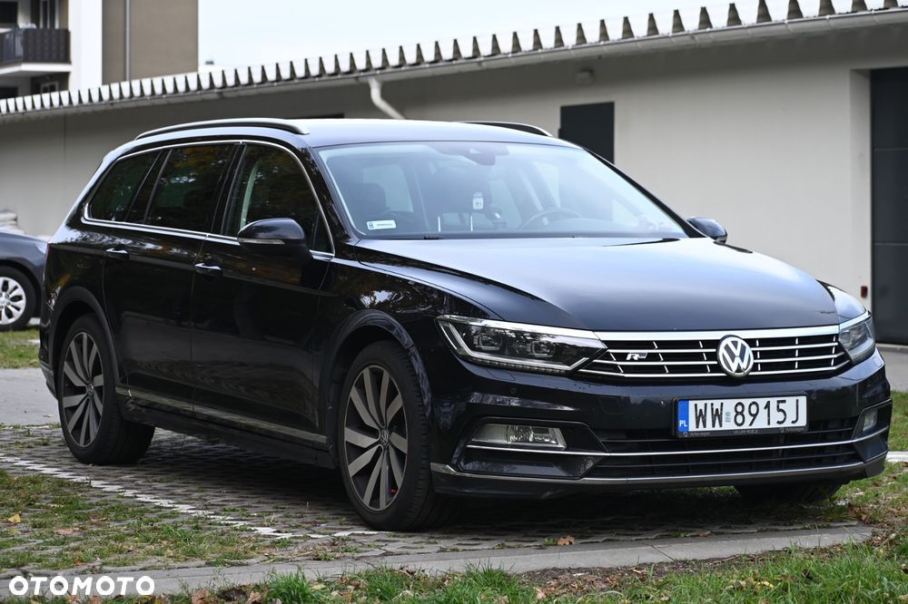
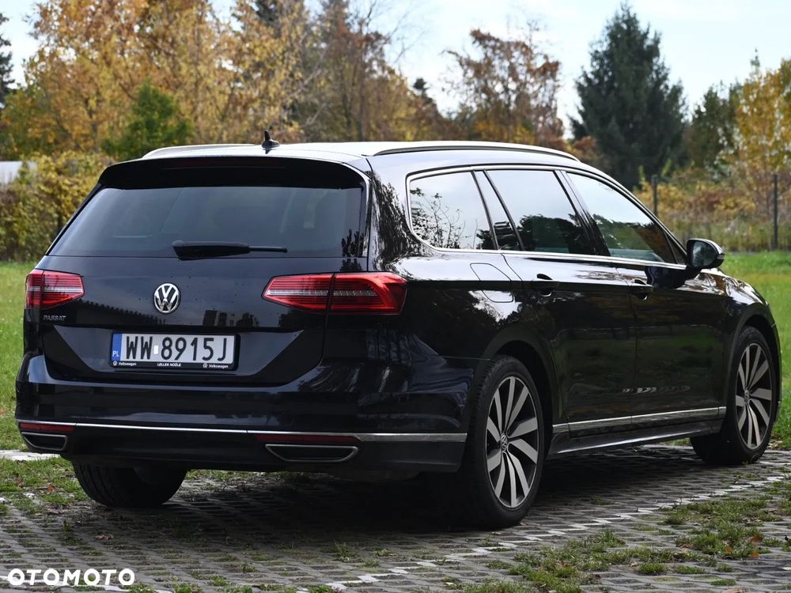
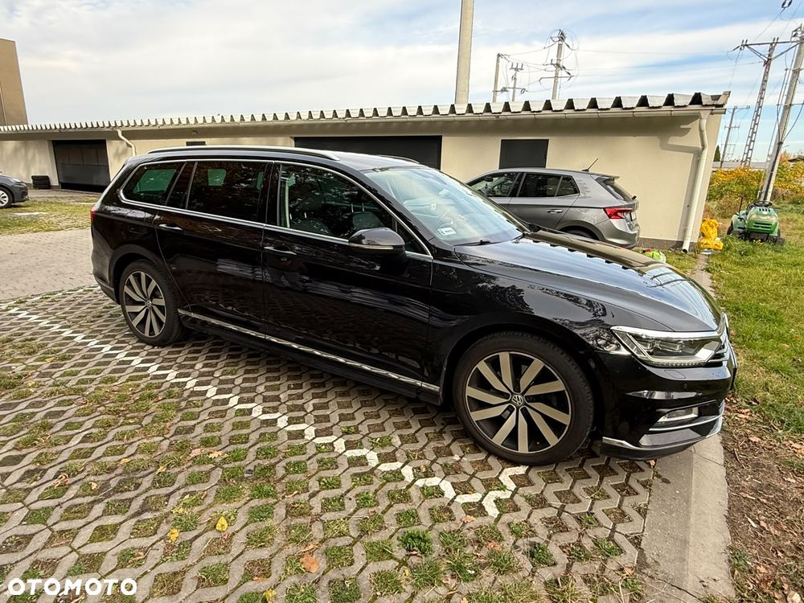
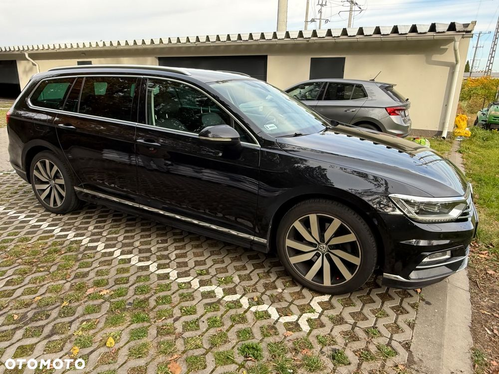
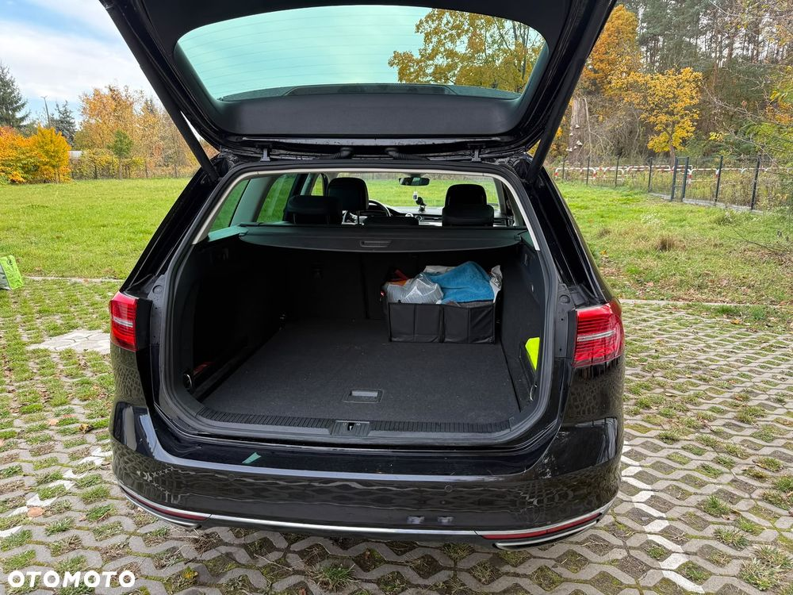
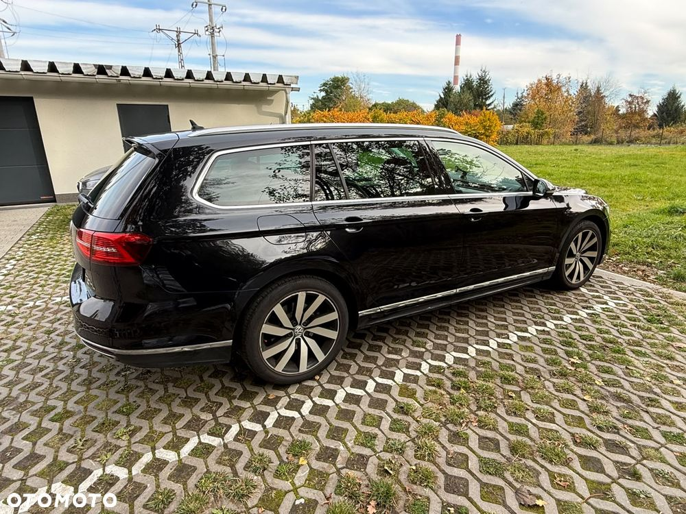
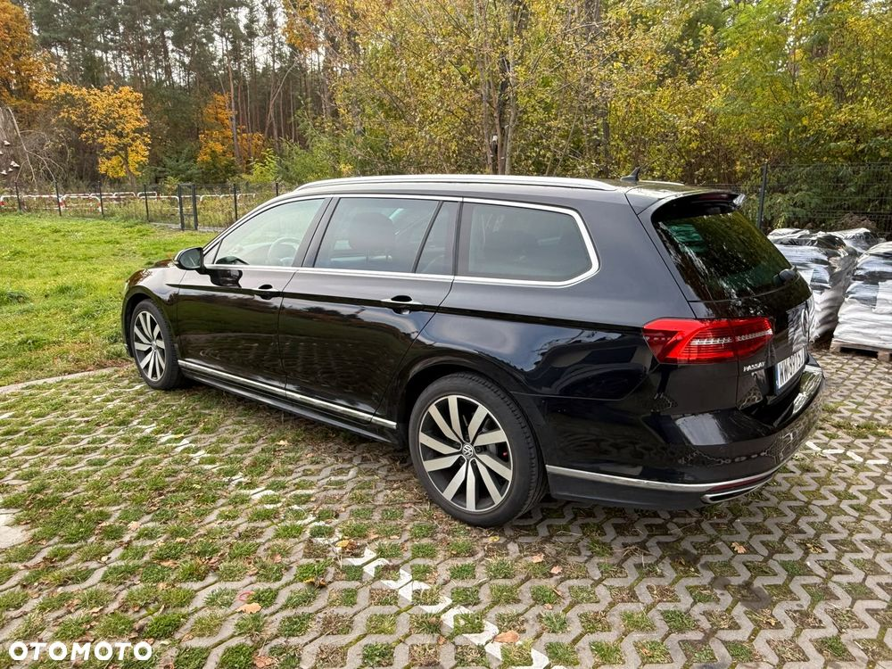
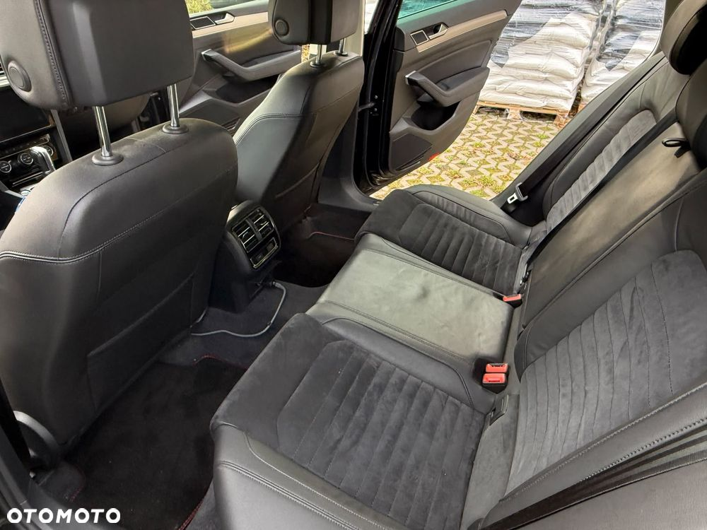
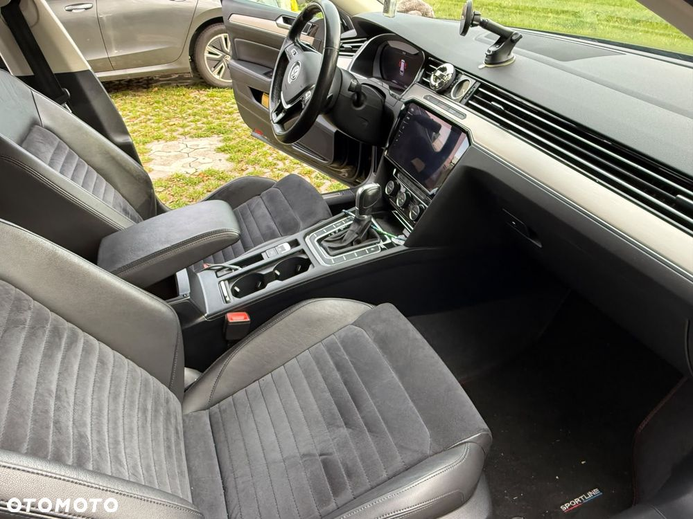
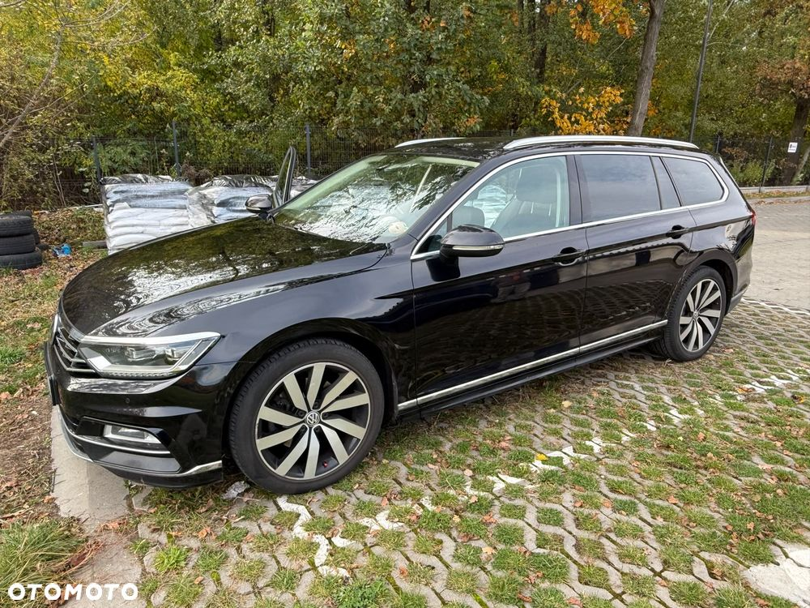
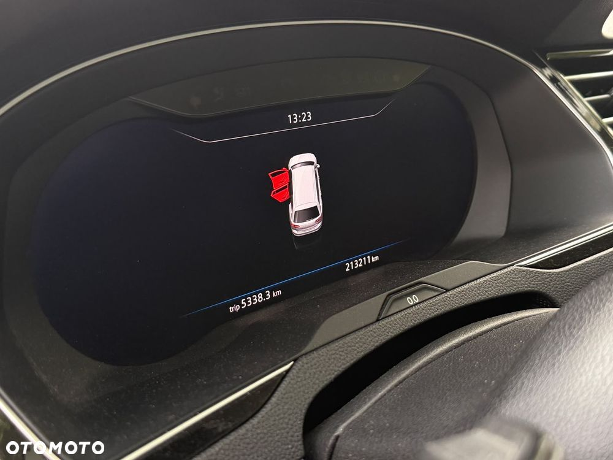
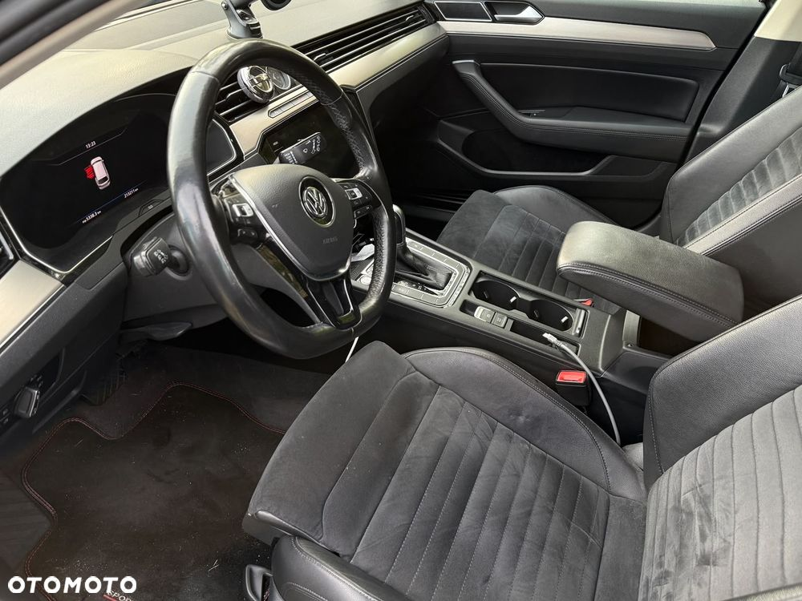
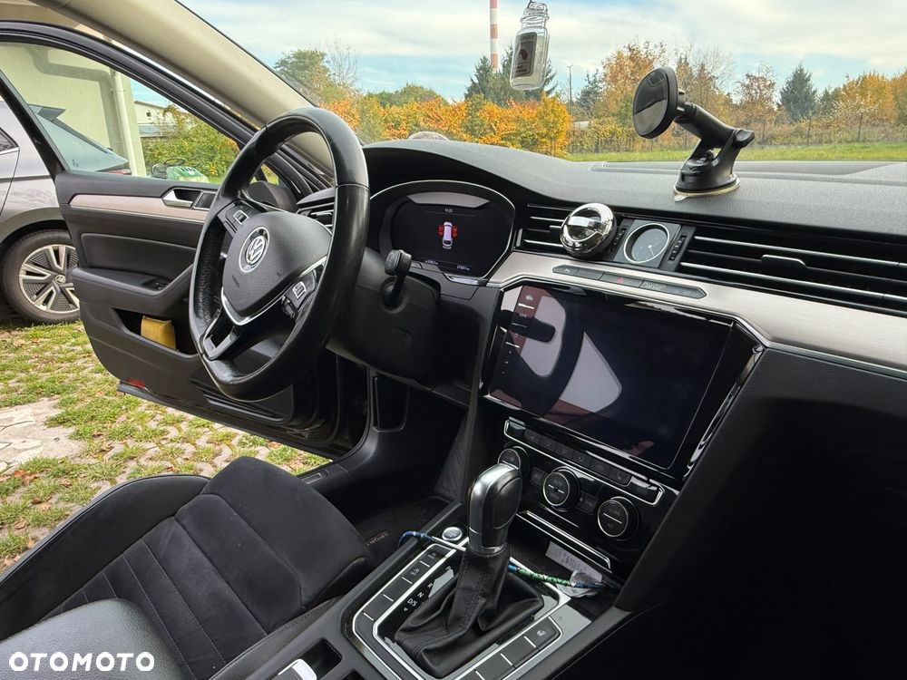
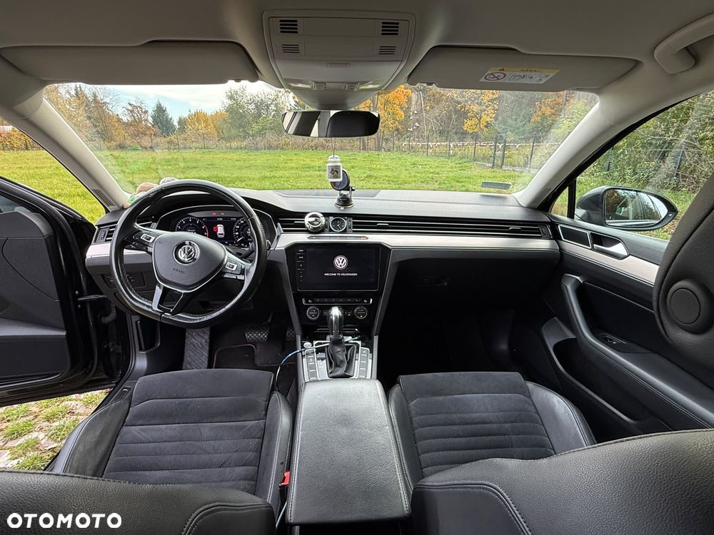